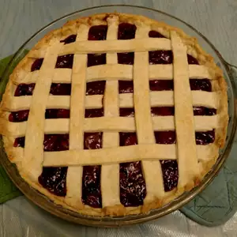

Cherry Pie

Prep Info
Prep
20 minutes
Cook
1 hour 15 minutes
Additional
15 minutes
Total
1 hour 50 minutes
servings
8
ingriedients
1 recipe pastry for a 9 inch double crust pie
1 (20 ounce) can pitted sour cherries
1 cup white sugar
1⅓ cup all-purpose flour
⅛ teaspoon salt
2 tablespoons butter
¼ teaspoon almond extract
¼ teaspoon red food coloring (Optional)